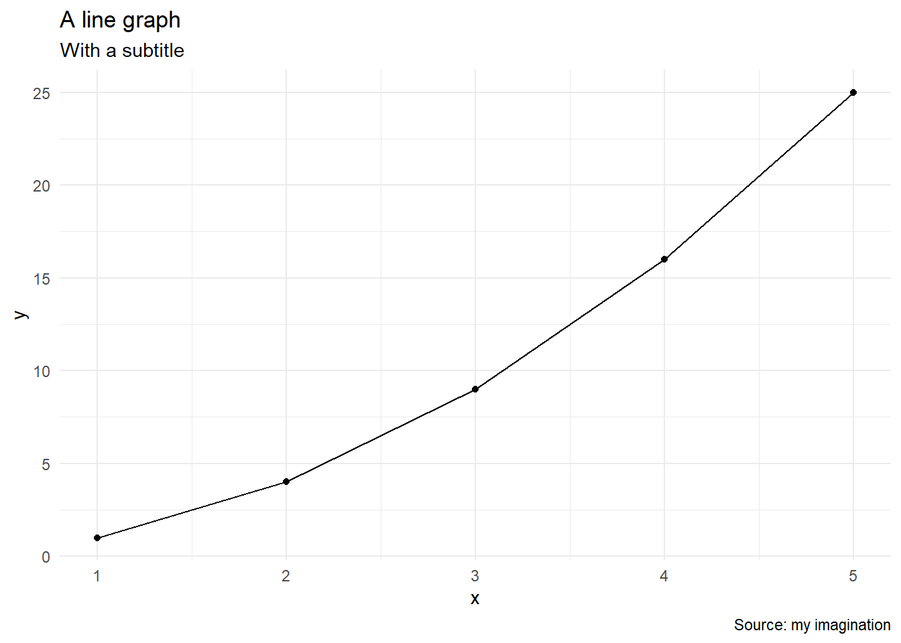

Code
1 + 1[1] 2Quarto enables you to weave together content and executable code into a finished presentation. To learn more about Quarto presentations see https://quarto.org/docs/presentations/.
When you click the Render button a document will be generated that includes:
When you click the Render button a presentation will be generated that includes both content and the output of embedded code. You can embed code like this:
1 + 1[1] 2You can also embed plots, for example:
plot(cars)
You can embed inline R code like this: 4.
You can also embed tables, for example:
summary(cars) speed dist
Min. : 4.0 Min. : 2.00
1st Qu.:12.0 1st Qu.: 26.00
Median :15.0 Median : 36.00
Mean :15.4 Mean : 42.98
3rd Qu.:19.0 3rd Qu.: 56.00
Max. :25.0 Max. :120.00 plot(pressure)
── Attaching core tidyverse packages ──────────────────────── tidyverse 2.0.0 ──
✔ dplyr 1.1.2 ✔ readr 2.1.4
✔ forcats 1.0.0 ✔ stringr 1.5.0
✔ ggplot2 3.4.3 ✔ tibble 3.2.1
✔ lubridate 1.9.2 ✔ tidyr 1.3.0
✔ purrr 1.0.1
── Conflicts ────────────────────────────────────────── tidyverse_conflicts() ──
✖ dplyr::filter() masks stats::filter()
✖ dplyr::lag() masks stats::lag()
ℹ Use the conflicted package (<http://conflicted.r-lib.org/>) to force all conflicts to become errors# Create a data frame
df <- data.frame(
x = c(1, 2, 3, 4, 5),
y = c(1, 4, 9, 16, 25)
)ggplot(df, aes(x, y)) +
geom_point() +
geom_line() +
labs(
title = "A line graph",
subtitle = "With a subtitle",
caption = "Source: my imagination"
) +
theme_minimal()